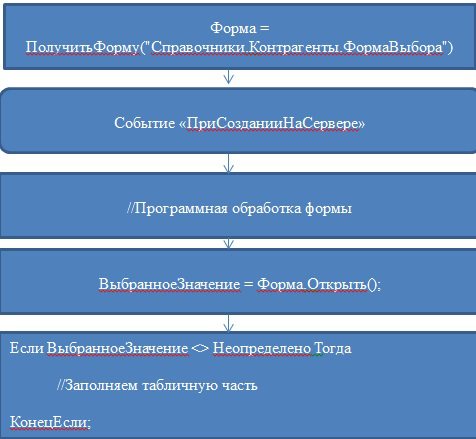

В публикации рассмотрены все возможные (ну или почти все) варианты программного открытия форм в управляемом приложении. Появление публикации связано с тем, что справка 1С и желтые книжки очень немногословны на эту тему. Часто простые задачи (например, создание элемента справочника на основании) вызывают трудности даже у очень опытных разработчиков 1С v 8.1, которые мало работали с управляемым приложением.
23:07:17Для начала небольшое лирическое отступление. Расскажу о том, как НЕ НАДО открывать формы.
Нельзя использовать метод ПолучитьФорму(). Это нельзя делать по двум причинам. Первая причина — это то, что этот метод отрабатывает на порядок медленнее, чем методы ОткрытьФорму() или ОткрытьФормуМодально(). Вторая причина кроется в том, почему собственно такой метод используется. Это обычно делается, когда нужно как-то программно обработать форму перед открытием. Например, нужно установить отбор динамического списка в форме выбора. Давайте рассмотрим, как обычно используется метод «ПолучитьФорму()» и чем ошибка использования такого метода. Программный код открытия формы выбора с отбором выглядит примерно так:

Ошибка здесь заключается в том, что код программной обработки формы вполне может вступить в конфликт с кодом события «ПриСозданииНаСервере» формы. Это может произойти не сразу. Например, в модуль формы внесли изменения гораздо позже. Причем тот разработчик, который вносил изменения в модуль формы окажется прав. Откуда ему знать, что его форма откуда-то вызывается таким образом?
Если вы хотите, чтобы ваше приложение работало в Web-Интерфейсе, то лучше воздержаться от открытия форм в Модальном режиме. В таком режиме они реализованы как всплывающие окна, которые по умолчанию отключены в большинстве браузеров. Вместо Модального режима можно использовать свойство управляемой формы РежимОткрытияОкна = "Блокировать окно владельца".
Про запреты все, расскажу, как правильно открывать формы
1. Как открыть форму объекта имея ссылку на него
Если нужно открыть основную форму объекта, то все очень просто
&НаКлиенте
Процедура ОткрытьФорму(Команда)
ОткрытьЗначение(СсылкаНаОбъект);
КонецПроцедуры
2. Как открыть форму выбора произвольного объекта
Простой вариант открытия: никакой дополнительной программной обработки формы не требуется. Нужно просто открыть основную форму выбора и получить выбранное значение. Используем метод «ВвестиЗначение». Синтаксис следующий:
&НаКлиенте
Процедура Команда1(Команда)
Перем ВыбЗнач;
Массив = Новый Массив;
Массив.Добавить(Тип("СправочникСсылка.Контрагенты"));
ОписаниеТиповК = Новый ОписаниеТипов(Массив);
Если ВвестиЗначение(ВыбЗнач, "Введите значение", ОписаниеТиповК) Тогда
Сообщить(ВыбЗнач);
КонецЕсли;
КонецПроцедуры
Если задать несколько возможных типов, то программа перед выбором значения предложит пользователю выбрать тип.
Использование метода ОткрытьФорму()
Сначала нужно разобраться с параметрами метода «ОткрытьФорму». Полный список параметров выглядит так:
ИмяФормы, Параметры, Владелец, Уникальность, Окно
С параметром «ИмяФормы» все более или менее понятно. А вот про то, что за загадочная штука «Параметры» (тип – Структура), в справке 1С написано очень мало. Передать туда можно все, что можно передать с клиента на сервер. Однако этой информации явно недостаточно. Попробую разобрать все возможные варианты.
3. Как открыть форму существующего объекта ссылочного типа
У формы любого объекта или записи регистра есть так называемый ключевой реквизит. В списке реквизитов формы он выделен полужирным. Чтобы открыть форму объекта, нужно в параметрдобавить элемент с Ключом «Ключ» и значением — ссылкой на нужный объект. Например:
&НаКлиенте
Процедура ОткрытьФормуПроекта(Команда)
П = Новый Структура;
П.Вставить("Ключ", Проект);
ОткрытьФорму("Справочник.Проекты.ФормаОбъекта", П);
КонецПроцедуры
4. Открыть форму существующей записи регистра
Очень похоже на открытие формы объекта ссылочного типа, однако в элементе «Ключ» вместо ссылки мы передаем Ключ записи регистра. Например:
&НаКлиенте
Процедура ОткрытьФормуРегистра(Команда)
КлючЗаписи = Новый Структура;
КлючЗаписи.Вставить("Период", ТекущаяДата());
КлючЗаписи.Вставить("ФизЛицо", Сотрудник);
МассивКлюча = Новый Массив;
МассивКлюча.Добавить(КлючЗаписи);
КлючЗаписиРегистра = Новый("РегистрСведенийКлючЗаписи.ФИОФизЛиц", МассивКлюча);
П = Новый Структура("Ключ", КлючЗаписиРегистра);
ОткрытьФорму("РегистрСведений.ФИОФизЛиц.ФормаЗаписи", П);
КонецПроцедуры
5. Как открыть форму нового объекта с обработкой заполнения
Это даже проще, чем открыть форму существующего. Мы просто не указываем в параметрах «Ключ».
&НаКлиенте
Процедура ОткрытьФорму(Команда)
П = Новый Структура;
ОткрытьФорму("Справочник.Проекты.ФормаОбъекта", П);
КонецПроцедуры
В это случае вызывается процедура «ОбработкаЗаполнения» модуля объекта. Эта процедура имеет единственный параметр «Основание». Если мы в параметры вставим ключ «Основание», то он будет передан в процедуру «ОбработкаЗаполнения». Например,
&НаКлиенте
Процедура ОткрытьФорму(Команда)
П = Новый Структура;
П.Вставить("Основание", Проект);
ОткрытьФорму("Справочник.Проекты.ФормаОбъекта", П);
КонецПроцедуры
6. Как правильно организовать выбор (подбор) в табличную часть
Стоит знать, что все параметры, указанные в параметреметода открыть форму, доступны в событии «ПриСозданииНаСервере» открываемой формы. Например:
&НаКлиенте
Процедура ОткрытьФорму(Команда)
П = Новый Структура;
П.Вставить("Основание", Проект);
ОткрытьФорму("Справочник.Проекты.ФормаВыбора", П);
КонецПроцедуры
Тогда в событии «ПриСозданииНаСервере» формы элемента справочника Проекты можно будет получить «НашПараметр». Однако форма справочника проекты может открываться, откуда угодно и этого параметра может и не быть. Поэтому лучше проверить, что параметр действительно передан при помощи такой конструкции:
&НаСервере
Процедура ПриСозданииНаСервере()
Если Параметры.Свойство("НашПараметр") Тогда
ПереданныйПараметр = Параметры.НашПараметр;
//Программная обработка формы
КонецЕсли;
КонецПроцедуры
Чтобы организовать выбор, нужно знать еще пару моментов. Первое, это параметр метода «ОткрытьФорму». В качестве владельца может выступать другая форма или элемент управления. Этот параметр, во-первых будет доступен в свойстве «ВладелецФормы» открываемой формы, а во-вторых, после совершения пользователем выбора стандартным способом (т.е. через форму выбора, по нажатии кнопки «Выбрать»), у Владельца сработает событие «ОбработкаВыбора».
&НаКлиенте
Процедура ОткрытьФорму(Команда)
П = Новый Структура;
П.Вставить("НашПараметр", Проект);
ВладелецФормыПодбора = Элементы.ПодчиненныеПроекты;
ОткрытьФорму("Справочник.Проекты.ФормаВыбора", П, ВладелецФормыПодбора);
КонецПроцедуры
В том случае, если выбор происходит не стандартным способом, т.е. открывается не форма выбора, а какая-то произвольная форма, то стоит использовать метод ОповеститьОВыборе(), при этом установив через параметры свойство открываемой формы ЗакрыватьПриВыборе = Истина. Например,
&НаКлиенте
Процедура ОткрытьФорму(Команда)
П = Новый Структура;
П.Вставить("НашПараметр", Склад);
П.Вставить("ЗакрыватьПриВыборе", Истина);
ВладелецФормыПодбора = Элементы.Товары;
ОткрытьФорму("Обработка.ПодборНоменклатуры.Форма", П, ВладелецФормыПодбора);
КонецПроцедуры
В самой форме организуем программно выбор таким образом:
&НаКлиенте
Процедура Выбрать(Команда)
РезультатВыбора = ПодготовитьРезультатВыбора();
ОповеститьОВыборе(РезультатВыбора);
КонецПроцедуры
&НаСервере
Функция ПодготовитьРезультатВыбора()
//Готовим результат выбора
КонецФункции
В результате выполнения метода ОповеститьОВыборе форма подбора закроется и вызовется событие «ОбработкаВыбора» элемента управления «Товары».
Прочие полезности. В случае подбора в форму можно передать параметры, чьи названия говорят сами за себя: «ЗакрыватьПриВыборе», МножественныйВыбор, ЗакрыватьПриЗакрытииВладельца. Все параметры имеют тип Булево. Их названия говорят сами за себя.
7. Как открыть форму и установить в ней отбор
Простая ситуация: простой отбор по одному или нескольким реквизитам. Например, что-то вроде такого
Контрагент = ВыбранныйКонтрагент И Организация = ВыбраннаяОрганизация
Для организации такого отбора нужно использовать параметр «Отбор», тип Структура, где Ключ – это Имя поля динамического списока, а значение это собственно то, почему нужно фильтровать данные. Например:
&НаКлиенте
Процедура ОткрытьФорму(Команда)
П = Новый Структура;
Отбор = Новый Структура;
Отбор.Вставить("Владелец", Контрагент);
П.Вставить("Отбор", Отбор);
ОткрытьФорму("Справочник.ДоговорыКонтрагентов.ФормаВыбора", П);
КонецПроцедуры
В том случае если отбор сложный и его можно установить только программно, то можно пойти двумя путями:
Первый путь: не самый удачный. Открываем форму, передаем в нее параметр
&НаКлиенте
Процедура ОткрытьФорму(Команда)
П = Новый Структура;
П.Вставить("Подразделение", Подразделение);
ВладелецФормыПодбора = Элементы.Сотрудник;
ОткрытьФорму("Справочник.СотрудникиОрганизаций.ФормаВыбора", П, ВладелецФормыПодбора);
КонецПроцедуры
В самой форме в событии «ПриСозданииНаСервере» задаем отбор списка:
&НаСервере
Процедура ПриСозданииНаСервере(Отказ, СтандартнаяОбработка)
Если Параметры.Свойство("Подразделение") Тогда
СписокСотрудников = ПодготовитьСписокСотрудниковПодразделения(Параметры.Подразделение);
НовыйЭлемент = Список.Отбор.Элементы.Добавить(Тип("ЭлементОтбораКомпоновкиДанных"));
НовыйЭлемент.ЛевоеЗначение = Новый ПолеКомпоновкиДанных("Ссылка");
НовыйЭлемент.ВидСравнения = ВидСравненияКомпоновкиДанных.ВСписке;
НовыйЭлемент.ПравоеЗначение = СписокСотрудников;
НовыйЭлемент.Применение = ТипПримененияОтбораКомпоновкиДанных.Элементы;
КонецЕсли;
КонецПроцедуры
Второй путь - это использование Параметов Выбора и поэтому он лучше. Пример:
&НаКлиенте
Процедура ПриОткрытии(Отказ)
Подразделение = Объект.Подразделение;
НовыйПараметр = Новый ПараметрВыбора("Подразделение ", Подразделение);
НовыйМассив = Новый Массив;
НовыйМассив.Добавить(НовыйПараметр);
НовыеПараметры = Новый ФиксированныйМассив(НовыйМассив);
Элементы.Сотрудник.ПараметрыВыбора = НовыеПараметры;
КонецПроцедуры
Почему параметры выбора использовать лучше:
1) Мы не отказываемся от стандартной обработки выбора: меньше кода
2) Параметры выбора будут доступны в процедуре «ОбработкаПолученияДанныхВыбора» модуля менеджера выбираемого объекта. Поэтому мы сможем ограничить список доступных значений выбора при вводе по строке.
Уникальность формы
Т.к. форму нельзя открывать модально, то вполне вероятно, что пользователь может несколько раз нажимать одну и ту же кнопку, открывающую форму. Чтобы форма не открывалась каждый раз, а активизировалась уже открытая форма, нужно заполнить параметр. Тип значения этого параметра произвольный, т.е. в него можно передать все, что угодно. Удобно в него передавать УникальныйИдентификатор формы, из которой производится открытие. Например,
ВладелецФормы = Элементы.Сотрудники;
ОткрытьФорму("Справочник.СотрудникиОрганизаций.Форма", , ВладелецФормы, ЭтаФорма.УникальныйИдентификатор);
Платформа будет искать открытые окна с таким ключом уникальности. В том случае, если она их найдет, то будет активировано существующее окно. В противном – открыто новое.